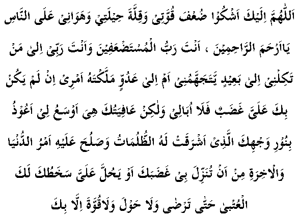

For nine years, since his selection by Allah Ta’ala for His mission, Nabi (Sallallahu Alayhi Wasallam) had been delivering the message of Allah Ta’ala in Makkah and making all-out efforts to guide and reform his community. Besides a few persons, who had either embraced Islaam, or who helped him though not accepting Islaam, all the rest in Makkah left no stone unturned in persecuting and mocking him and his followers.
His uncle Abu Talib was one of those good-hearted people who, in spite of his not entering into the fold of Islam had helped him. The following year, on the death of Abu Talib, the Quraish got a free hand and therefore increased their persecution without anyone to support and protect Nabi (Sallallahu Alayhi Wasallam).
At Taif, the second biggest town of Hijaz, there lived a big clan called Banu Thaqif. Nabi (Sallallahu Alayhi Wasallam) left for Taif with the hope of winning them over to Islam, thereby providing a sanctuary for the Muslims from the persecution of the Quraish, and also establishing a base for the future propagation of Islam. On reaching Taif, Nabi (Sallallahu Alayhi Wasallam) visited the three chieftains of the clan separately, and placed before each of them the message of Allah Ta’ala, and called upon each of them to stand by his side.
Instead of accepting his message, they refused to even listen to him and not in keeping the famous Arab hospitality, each of them treated him most disrespectfully and rudely. They plainly told him that they did not like his stay in their town. As they were the heads of their clans, Nabi (Sallallahu Alayhi Wasallam) had expected a civil and friendly treatment and due courtesy in speech from them.
But one of them sneered: "Hey, Allah Ta’ala has made you a Nabi!"
The other exclaimed with ridicule: "Could Allah not lay His hand on anyone else, beside you to make him His Nabi?"
The third one mockingly remarked: "I do not want to talk to you, for if you are in fact a Nabi, then to oppose you is to invite trouble, and if you only pretend to be one, why should I talk with an impostor?"
Nabi (Sallallahu Alayhi Wasallam), who was a rock of steadfastness and perseverance, did not lose heart over this check from the chieftains and tried to approach the common people; but nobody would listen to him. Instead they asked him to clear off from their town and go wherever else he liked. When he realised that further efforts were in vain, he decided to leave the town, but they would not let him depart in peace and set the street urchins after him to hiss, to hoot, to jeer at and to stone him. He was so much pelted with stones that his whole body was covered with blood and his shoes were clogged to his feet. He left the town in this sorrowful plight. When he was far out of the town and safe from the mob, he prayed to Allah thus:

"Oh Allah, I complain to You alone that I am weak, that I do not have any resources and that I do not hold any significance in the eyes of the people. O, Most Merciful of all those who show mercy, You are the Rabb (Lord) of the weak, and You are my own Rabb (Lord). To whom are You going to entrust me? To a stranger who would look at me harshly or to an enemy, to whom You have given control over my affairs. If You are not angry with me, then I do not care for anything except that I should enjoy Your protection. I seek shelter in Your light (noor), which removes all sorts of darknesses and controls the affairs of this world and the hereafter. May it never be that you become angry with me or you are displeased with me. I must please you until You are happy with me. There is neither strength (to refrain from evil) nor any power (to do any good) except with You."
The Heavens were moved by the Dua and Jibraeel (Alayhis Salaam) appeared before Nabi (Sallallahu Alayhi Wasallam), greeting him with Assalamu Alaikum and said: "Allah knows all that has passed between you and these people. He has deputed the angel in charge of the mountains to be at your command."
Saying this, Jibrail (Alayhis Salaam) brought the angel before Nabi (Sallallahu Alayhi Wasallam). The angel greeted Nabi (Sallallahu Alayhi Wasallam) with Assalamu Alaikum and said: "O, Nabi of Allah, I am at your service. If you wish, I can cause the mountains overlooking this town on both sides to collide with each other, so that all the people therein would be crushed to death, or you may suggest any other punishment for them."
The merciful and noble Nabi (Sallallahu Alayhi Wasallam) said: "Even if these people do not accept Islam, I do hope from Allah that there will be persons from among their progeny who would worship Allah and serve His cause."
Look at the conduct of our noble Nabi (Sallallahu Alayhi Wasallam), whom we profess to follow. We get so much irritated over a little trouble or a mere abuse from somebody that we keep on torturing them and taking revenge throughout our lives in every possible manner. Does it befit people who claim to follow the noble Nabi (Sallallahu Alayhi Wasallam)? Look, even after so much suffering at the hands of the Taif mob, he neither curses them nor does he work for any revenge, even when he has the full opportunity to do so.